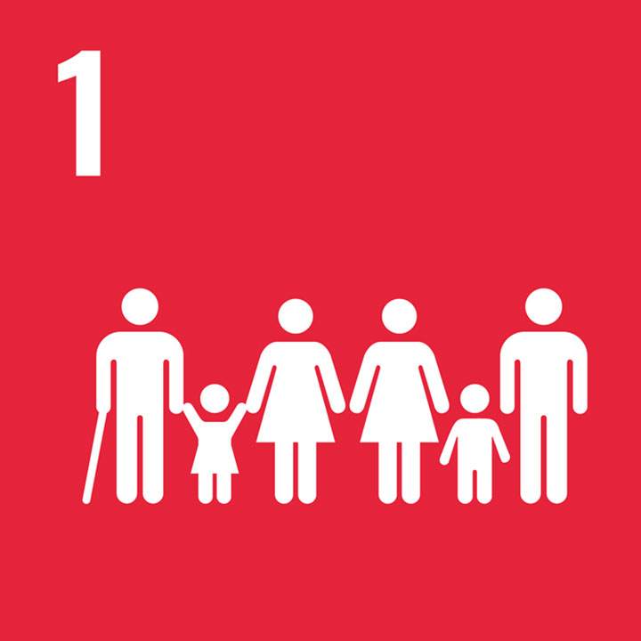
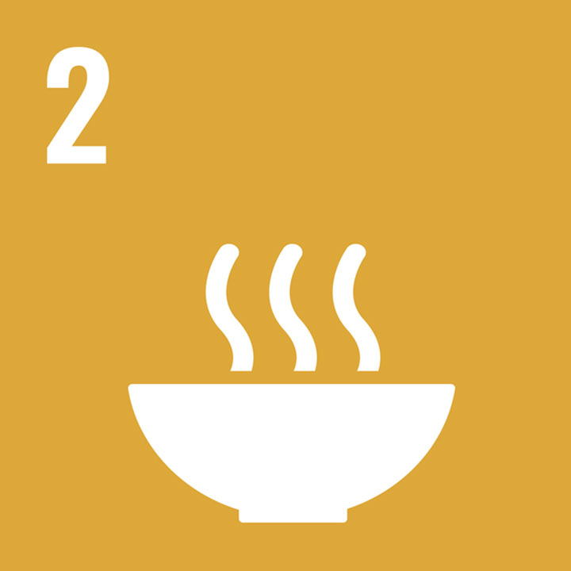
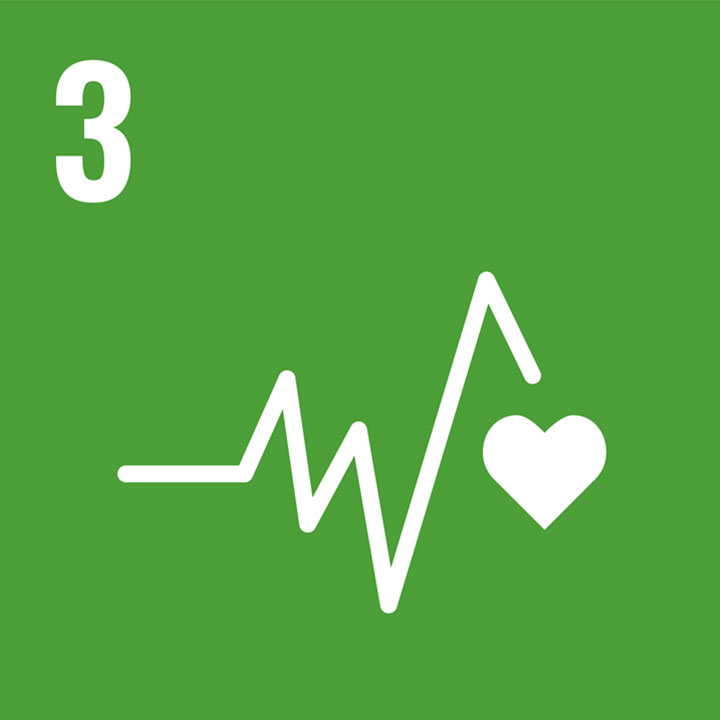

SDGs
-

SDGs 1: NO POVERTY
Food insecurity exacerbates poverty, as individuals and families struggle to afford basic nutrition. Addressing food issues can help lift communities out of poverty by improving economic opportunities and access to resources.
Keep ReadingFood insecurity creates a vicious cycle of poverty where families cannot afford proper meals, leading to poor health, reduced productivity, and limited access to education. This perpetuates intergenerational poverty and inequality. Tackling food scarcity not only ensures survival but also empowers individuals to break free from poverty through better health and increased opportunities. Additionally, improving food security enhances local economies by creating jobs in agriculture, distribution, and retail. When communities have access to affordable and nutritious food, they are better equipped to focus on education, professional development, and community building. Efforts to reduce food waste and promote sustainable farming practices further strengthen economic stability and resilience against future crises. By addressing food insecurity as a fundamental step, we create a pathway toward equitable growth, ensuring every individual has the chance to live a life free from the shackles of poverty and hunger. Together, we can transform societies and pave the way for a more inclusive and sustainable future.
-

SDGs 2: ZERO HUNGER
Ensuring access to nutritious food is essential to eliminate hunger and malnutrition globally.
Keep ReadingHunger and malnutrition remain pressing global challenges, affecting millions of individuals, particularly in vulnerable communities. Access to adequate and nutritious food not only addresses immediate hunger but also strengthens resilience, health, and well-being over the long term. By improving food distribution systems and supporting local agriculture, we can bridge the gap between food abundance in some regions and scarcity in others. Encouraging sustainable farming practices and reducing food waste are critical measures to ensure that the global food supply can meet the growing demands of a rising population. Furthermore, empowering small-scale farmers with resources, training, and technology can significantly increase productivity and foster self-reliance. Malnutrition, particularly among children, has far-reaching impacts on education, productivity, and societal development. Addressing this issue through school meal programs, fortified food initiatives, and public health campaigns can create a healthier, more equitable society. By tackling the root causes of hunger, including poverty, climate change, and inequality, we take steps toward achieving food security for all. Zero Hunger is not just about providing food—it’s about ensuring dignity, equity, and opportunity for all individuals. Together, through collective action and innovation, we can create a world where no one has to go to bed hungry, and every individual has the chance to thrive.
-

SDGs 3: GOOD HEALTH AND WELL-BEING
Access to safe and nutritious food is vital for maintaining health and preventing diseases. Food issues, such as food safety and nutrition, directly impact overall well-being and healthcare costs.
Keep ReadingNutritious food is the foundation for a healthy life, reducing the risk of chronic diseases such as diabetes, heart conditions, and obesity, while promoting physical and mental well-being. Safe and reliable food sources not only improve individual health but also reduce the strain on healthcare systems. When communities prioritize food safety standards and ensure access to balanced diets, they contribute to lower healthcare costs and enhanced economic productivity. Addressing food-related health issues also fosters societal benefits, as healthier populations are more resilient to illnesses and can actively contribute to their communities. Additionally, food security and proper nutrition are particularly critical for vulnerable groups, including children, pregnant women, and the elderly. Malnourishment during critical development stages can lead to lifelong health complications, underscoring the importance of addressing these issues through public policies, education campaigns, and accessible healthcare services. Promoting good health and well-being also requires collaboration across sectors, from agriculture and education to healthcare and government. By integrating nutrition education into school curricula, investing in local food systems, and encouraging healthier lifestyle choices, we can build a society where everyone has the opportunity to lead a healthy and fulfilling life. Together, these efforts form the cornerstone of a sustainable and prosperous future.
-
SDGs 12: RESPONSIBLE CONSUMPTION AND PRODUCTION
Promoting sustainable food systems can reduce food waste and environmental impact. Encouraging responsible consumption patterns helps ensure that food resources are used efficiently and sustainably.
Keep ReadingA shift towards mindful consumption and production practices not only preserves valuable resources but also mitigates the adverse effects of food systems on climate change, biodiversity, and ecosystems. By adopting sustainable agriculture and production techniques, we can minimize the environmental footprint of food production. Practices like crop rotation, organic farming, and reduced use of chemical inputs not only protect soil health but also enhance long-term agricultural productivity. Additionally, supporting local food systems reduces the carbon emissions associated with transportation and strengthens community resilience. Reducing food waste is a critical component of responsible consumption. Globally, one-third of all food produced is wasted, leading to significant economic losses and environmental damage. Strategies such as improved supply chain management, consumer education, and food donation programs can help redirect surplus food to those in need and minimize waste. Empowering consumers to make informed choices is another vital aspect of achieving SDG 12. Labels highlighting sustainability certifications, carbon footprints, and ethical practices enable individuals to align their purchases with their values. Governments, businesses, and individuals must work together to establish policies, technologies, and incentives that support responsible production and consumption on a global scale. Ultimately, achieving responsible consumption and production is about creating systems that respect planetary boundaries, prioritize equity, and promote well-being for present and future generations. Together, we can ensure a balance between human needs and environmental sustainability.